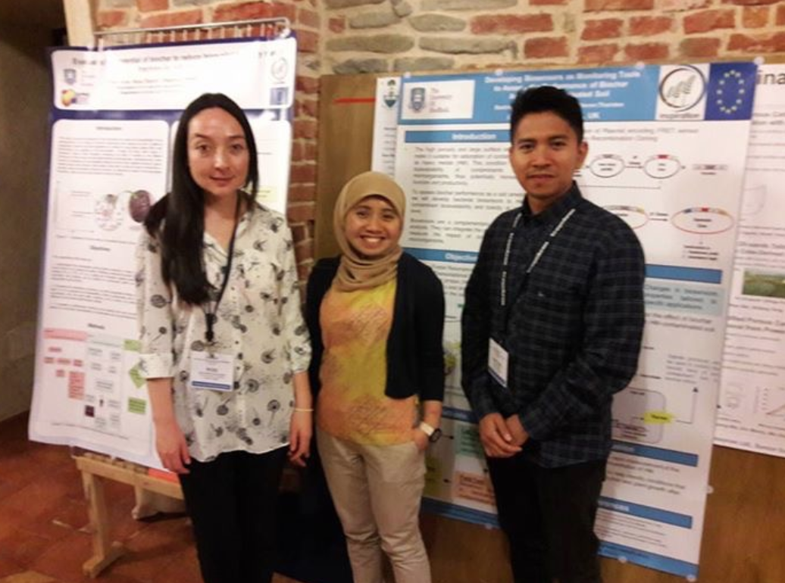

20/8/2017 - 25/8/2017
Stakeholders:Scientists, students, Associazione Italiana Biochar (ICHAR)
Presenting the INSPIRATION project regarding the biosensor application as a new approach to assess the biochar performance in soil remediation.
Collaboration opportunity with the Biochar Research Team, Swansea University regarding the biochar application for contaminated soil remediation.
More information can be found
here.

20/8/2017 - 25/8/2018. Alba, Italy.
Stakeholders: Researchers from different Universities of Europe, US, Canada and Asia and representatives from private sector
The participants were invited to present an full article for the special issue of the journal Biomass and Bioenerge with the topic of the conference. This was the first conference exclusivele dedicated to the discussion of production technologies, applications and characterization of biochar. The International Biochar Initiative (IBI) has joined all the presentations and soon will be published it on the website.
More information can be found
here.